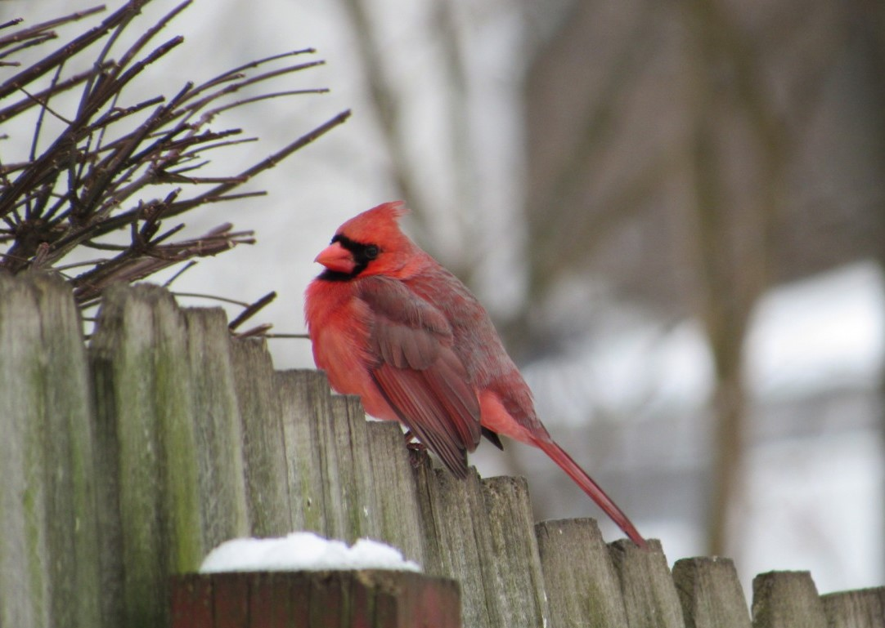
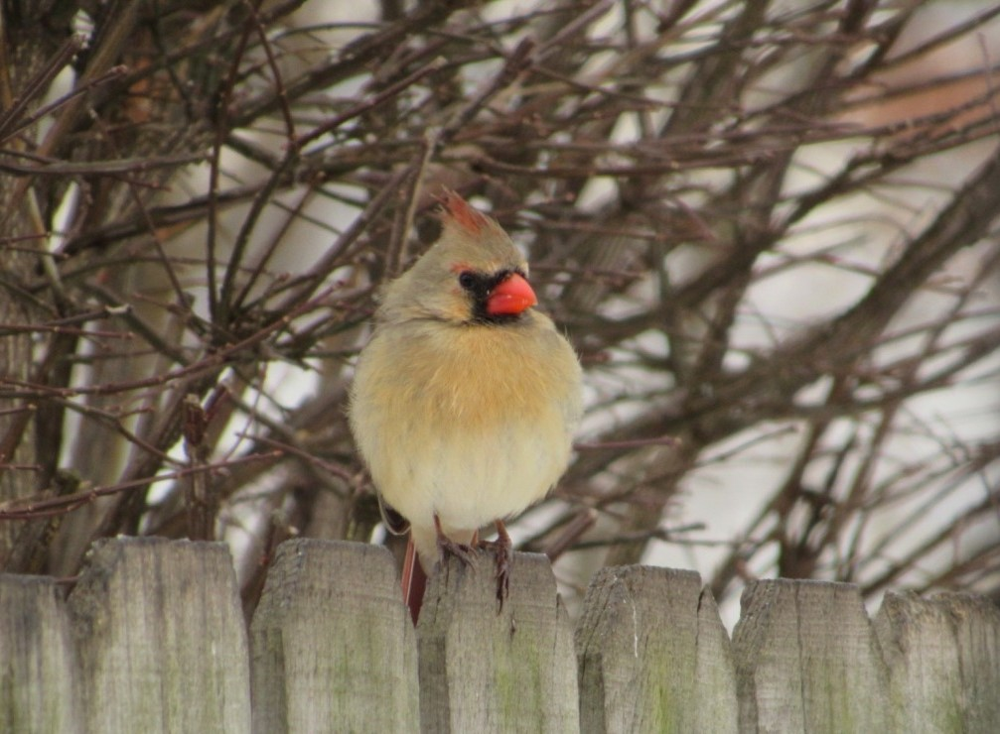

Northern Cardinal


- Description
- The male Northern Cardinal is perhaps responsible for getting more people to open up a field guide than any other bird. They’re a perfect combination of familiarity, conspicuousness, and style: a shade of red you can’t take your eyes off. Even the brown females sport a sharp crest and warm red accents. Cardinals don’t migrate and they don’t molt into a dull plumage, so they’re still breathtaking in winter’s snowy backyards. In summer, their sweet whistles are one of the first sounds of the morning.
- Behavior
- Northern Cardinals hop through low branches and forage on or near the ground. Cardinals commonly sing and preen from a high branch of a shrub. The distinctive crest can be raised and pointed when agitated or lowered and barely visible while resting. You typically see cardinals moving around in pairs during the breeding season, but in fall and winter they can form fairly large flocks of a dozen to several dozen birds.
- Habitat
- Look for Northern Cardinals in dense shrubby areas such as forest edges, overgrown fields, hedgerows, backyards, marshy thickets, mesquite, regrowing forest, and ornamental landscaping. Cardinals nest in dense foliage and look for conspicuous, fairly high perches for singing. Growth of towns and suburbs across eastern North America has helped the cardinal expand its range northward.
- Diet
- Northern Cardinals eat mainly seeds and fruit, supplementing these with insects (and feeding nestlings mostly insects). Common fruits and seeds include dogwood, wild grape, buckwheat, grasses, sedges, mulberry, hackberry, blackberry, sumac, tulip-tree, and corn. Cardinals eat many kinds of birdseed, particularly black oil sunflower seed. They also eat beetles, crickets, katydids, leafhoppers, cicadas, flies, centipedes, spiders, butterflies, and moths.
Cardinal Call
Cool Facts
- Only a few female North American songbirds sing, but the female Northern Cardinal does, and often while sitting on the nest. This may give the male information about when to bring food to the nest. A mated pair shares song phrases, but the female may sing a longer and slightly more complex song than the male.
- The male cardinal fiercely defends its breeding territory from other males. When a male sees its reflection in glass surfaces, it frequently will spend hours fighting the imaginary intruder.
- A perennial favorite among people, the Northern Cardinal is the state bird of seven states.